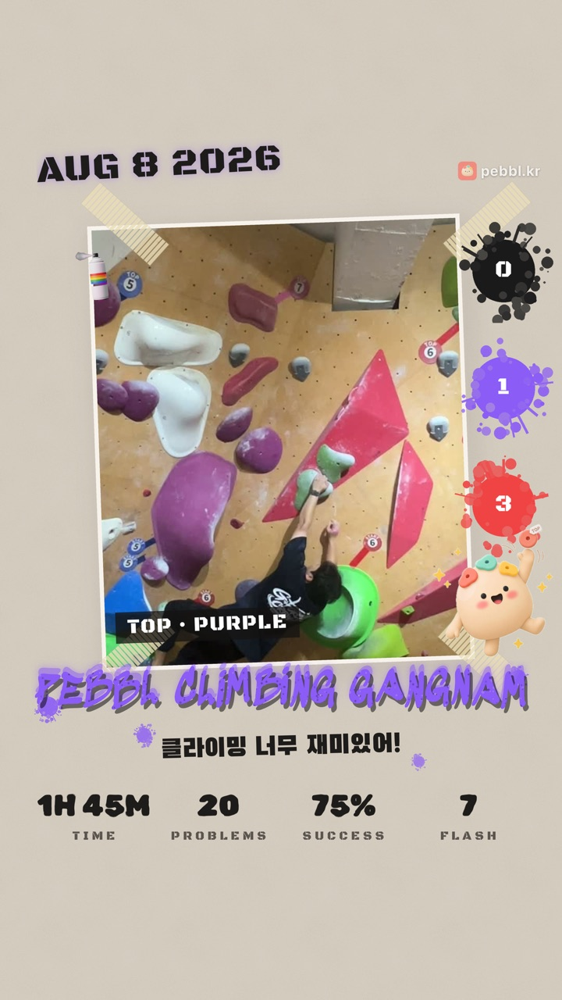

새로 생긴 기능과 달라진 점을 버전마다 모아뒀어요. 날짜는 App Store 출시일 기준이에요.
v1.1.22026.10.01
새 인포그래픽 템플릿 「그래피티」가 추가됐어요
콘크리트 벽에 스프레이로 쓴 듯한 스타일로, 사진이나 영상을 함께 담을 수 있어요.

그래피티 템플릿
한 마디 글씨가 템플릿마다 달라졌어요 — 템플릿 분위기에 맞는 글씨체로 바뀝니다
커뮤니티가 「공지」와 「이야기」로 나뉘었어요
돌아보기 카드 칭호 아이콘을 새로 다듬었어요
카탈로그에 올릴 영상의 길이를 고를 수 있어요
최고 난이도를 V등급 대신 색 이름으로 보여줘요
성장 탭에서 암장별로 기록을 볼 수 있어요
그 밖에 자잘한 표시 오류를 고쳤어요
v1.1.12026.09.24
설정 화면을 새로 단장했어요
내 기록 · 앱 · 계정으로 묶고, 화면이 작은 기기에서도 끝까지 스크롤돼요.
즉석사진 템플릿이 예뻐졌어요
렌즈 링, 폴라로이드, 빨래집게를 페블과 같은 질감으로 다시 그렸어요. 페블이 스탯마다 다른 포즈로 등장하고, 가장 어려웠던 난이도는 색 이름으로 보여줘요.
문제의 '느낌'이 늘었어요
파워, 리치, 볼륨이 추가됐어요. 물음표를 누르면 각 느낌의 설명을 볼 수 있고, 직벽에서 시작해 살짝 기우는 벽처럼 섞인 벽은 둘 다 골라도 돼요.
그 밖에
탭바 아이콘 색을 앱 톤에 맞췄어요
v1.1.02026.09.22
Pebbl이 새 옷을 입었어요
화면 열 개를 다시 그리고 서체를 바꿨어요.
새로워진 화면
홈, 운동 기록, 요약, 히스토리, 랭킹, 커뮤니티, 글쓰기, 카탈로그, 인포그래픽 편집, 최근 기록. 눈에 잘 들어오는 서체와 따뜻한 색으로 정리했어요. 페블 캐릭터도 곳곳에서 만날 수 있어요.
문제의 '느낌'을 남길 수 있어요
기록할 때 슬랩, 오버행, 다이노, 크림프처럼 그 문제의 느낌을 골라 두세요. 카탈로그에서는 느낌으로 영상을 거를 수 있어요.
카탈로그에 팁과 '몇 트'가 생겼어요
영상을 올릴 때 한 줄 팁과 몇 트에 완등했는지(Flash, 2~3트…)를 적을 수 있어요. 키 구간을 고르면 나와 비슷한 사람의 영상만 모아 볼 수 있어요.
성장 탭이 더 자세해졌어요
지금까지 기록, 주별 운동 횟수, 주별 최고 난이도, 암장별, 요일별 패턴을 볼 수 있어요.
그 밖에
최근 기록에서 시도 횟수를 직접 고칠 수 있고, 완등 표기가 'N트'로 바뀌었어요
운동 요약에서 인포그래픽 공유가 더 눈에 띄게, 기록 수정은 행을 탭하면 돼요
자잘한 오류 여섯 가지를 고쳤어요
v1.0.102026.09.18
홈에 '이번 주'가 생겼어요
이번 주에 몇 번 갔는지 점으로 보여주고, 몇 주째 계속 다니고 있는지도 함께 보여줘요. 점을 누르면 한 주 목표(1~7회)를 정할 수 있고, 채우면 색이 바뀌어요.
한 해 카드에서 연도를 넘길 수 있어요
'한 해' 카드 위의 화살표로 지난해 카드도 만들 수 있어요.
달이 바뀌면 홈에서 알려드려요
매달 초 며칠 동안 '지난달 카드 만들기' 배너가 떠요. 12월과 1월엔 한 해 카드로 안내해요.
사용법을 새로 썼어요
돌아보기 카드, 랭킹, 카탈로그 등 그동안 늘어난 기능에 맞춰 설정 > 사용법을 다시 정리했어요. 아이콘도 새로 그렸어요.
그 밖에
카드와 인포그래픽의 워터마크에 pebbl.kr 주소가 들어가요
설정에서 친구에게 앱 링크를 보낼 수 있어요
v1.0.92026.09.17
한 달, 한 해를 카드 한 장으로 돌아봐요
홈의 '한 달 돌아보기'에서 이번 달 달력 카드를, '한 해' 탭에서 올해의 히트맵 카드를 만들 수 있어요. 운동한 날과 다닌 암장, 이 달의 칭호가 담긴 세로 카드라 인스타그램 스토리에 그대로 올리기 좋아요. 라이트·다크 두 가지 톤 중 고를 수 있고, 저장하거나 바로 공유할 수 있어요.
성장 차트가 새로워졌어요
기록 탭의 차트 4종을 다시 그렸어요. 성공률은 민트, 난이도는 코랄로 나눠 한눈에 읽히고, 난이도 추이는 V등급을 축으로 보여줘요.
암장 정보에 주소가 생겼어요
암장 관리 화면에서 주소를 볼 수 있고, 잘못된 정보는 '알리기'로 바로 알려줄 수 있어요.
랭킹을 처음 볼 때 안내가 떠요
운동왕·활동왕이 어떻게 계산되는지 처음 한 번 알려드려요. 제목 옆 물음표를 누르면 언제든 다시 볼 수 있어요.
그 밖에
인포그래픽 공유 버튼 디자인을 다듬었어요
여러 암장의 같은 난이도가 성장 차트에 따로 표시되던 문제를 고쳤어요
v1.0.82026.09.14
랭킹이 새로워졌어요
이제 랭킹이 두 가지로 나뉘어요.
운동왕 — GPS로 인증된 '출석 일수'로 겨뤄요
활동왕 — 글, 댓글, 받은 좋아요, 영상 업로드로 겨뤄요
난이도와 완등 기록은 랭킹에서 빠졌어요. 직접 적는 값이라 서로 비교하기엔 맞지 않았거든요. 대신 인포그래픽과 기록 화면에서는 그대로 주인공이에요. 기준이 바뀌면서 기존 포인트는 초기화됐어요.
배경 영상을 30초까지 쓸 수 있어요
10초로는 완등 한 번을 담기 어렵다는 의견이 많았어요.
가로로 찍은 영상도 잘리지 않아요
예전에는 가로 영상을 넣으면 좌우가 크게 잘리고 화질도 떨어졌어요. 이제 영상을 그대로 두고 위아래에 여백을 넣어 저장해요.
설정에 '지금 동기화'가 생겼어요
다른 기기에서 기록한 운동을 바로 가져올 수 있어요.
v1.0.72026.09.09
인포그래픽을 영상으로 저장할 수 있어요
운동 기록 인포그래픽을 완등 영상 위에 얹어 하나의 영상으로 저장해요. 인스타그램 게시물에 그대로 올릴 수 있어요.
갤러리에서 클립을 고르면 원하는 구간을 잘라 쓸 수 있어요
배경 영상은 확대·이동으로 위치를 맞출 수 있어요
게시물 비율(3:4)에 맞춰 저장돼 위아래가 잘리지 않아요
공식 암장 10곳이 추가됐어요
그루트 클라이밍, 피커스클라이밍(구로·신촌·종로), 클라이밍파크(강남·신논현·종로), 웨이브락(서면·부산대·남천). 부산 지역 암장이 처음 추가됐어요.
카탈로그가 편해졌어요
암장을 목록에서 골라요. 암장이 많아져도 화면이 밀리지 않아요
벽별로 영상을 골라 볼 수 있어요
이런 것들을 고쳤어요
저장 실패, 입력 오류 같은 안내가 화면에 뜨지 않던 문제를 고쳤어요
커뮤니티 목록을 스크롤할 때 제목이 상단에 고정돼요
v1.0.62026.09.01
완등 영상 카탈로그가 열렸어요
나와 비슷한 키·리치의 클라이머가 같은 문제를 어떻게 풀었는지 찾아볼 수 있어요. 암장과 키 구간으로 골라 보세요.
완등 영상을 올리면 같은 문제를 붙는 사람들에게 도움이 돼요. 60초까지 올릴 수 있고, 큰 영상은 자동으로 압축돼요.
부적절한 영상은 신고하거나 해당 이용자를 차단할 수 있어요.
그 밖에
암장 정보 화면이 새로워졌어요. 난이도를 V등급으로 보여주고 벽 목록도 함께 확인할 수 있어요.
「내 암장」에서 메인 암장과 즐겨찾기를 한눈에 관리할 수 있어요.
커뮤니티 공지가 목록 위에 고정돼요.
설정에서 이용약관·개인정보 처리방침·커뮤니티 가이드라인을 바로 열 수 있어요.
v1.0.52026.08.27
운동 기록이 훨씬 빨라졌어요
암장 「등록」 단계를 없앴어요 — 운동 시작에서 바로 고르면 돼요. 자주 가는 곳은 별 아이콘으로 즐겨찾기에 두세요.
문제를 기록할 때 시도 횟수를 앱이 세줘요. 결과 버튼을 누르면 바로 저장돼 연속으로 입력할 수 있어요.
난이도 버튼을 새로 다듬고, 오늘 그 난이도를 몇 개 기록했는지 버튼 위에 숫자로 보여줘요.
설정에 「사용법」을 추가했어요.
인포그래픽 저장 버튼을 하나로 합쳤어요.
고친 점
오전에 한 운동이 캘린더에서 전날로 표시되던 문제를 고쳤어요.
일부 암장 이름이 인포그래픽에서 한글로 나오던 문제를 고쳤어요.
v1.0.42026.08.18
기록이 어긋나거나 저장이 깨지던 문제들을 크게 손봤어요
새로워진 점
「즉석사진」 템플릿이 추가돼 인포그래픽이 7종이 됐어요
인포그래픽에 표시할 난이도를 직접 고를 수 있어요 (데이터 탭)
프로필에 키와 리치를 입력할 수 있어요 (선택) — 완등 영상 기능에서 나와 비슷한 체형의 클라이머를 찾는 데 쓰여요
고친 점
세로로 찍은 배경 사진이 저장하면 옆으로 눕던 문제
요소 정렬과 간격 맞추기가 동작하지 않던 문제
요소를 3개 이상 선택하면 완료 버튼이 사라져 빠져나갈 수 없던 문제
배경 사진을 넣을 때 앱이 종료되던 문제
암장을 삭제하면 기존 기록의 난이도와 포인트가 어긋나던 문제 (이미 어긋난 기록은 앱을 켜면 자동으로 복구돼요)